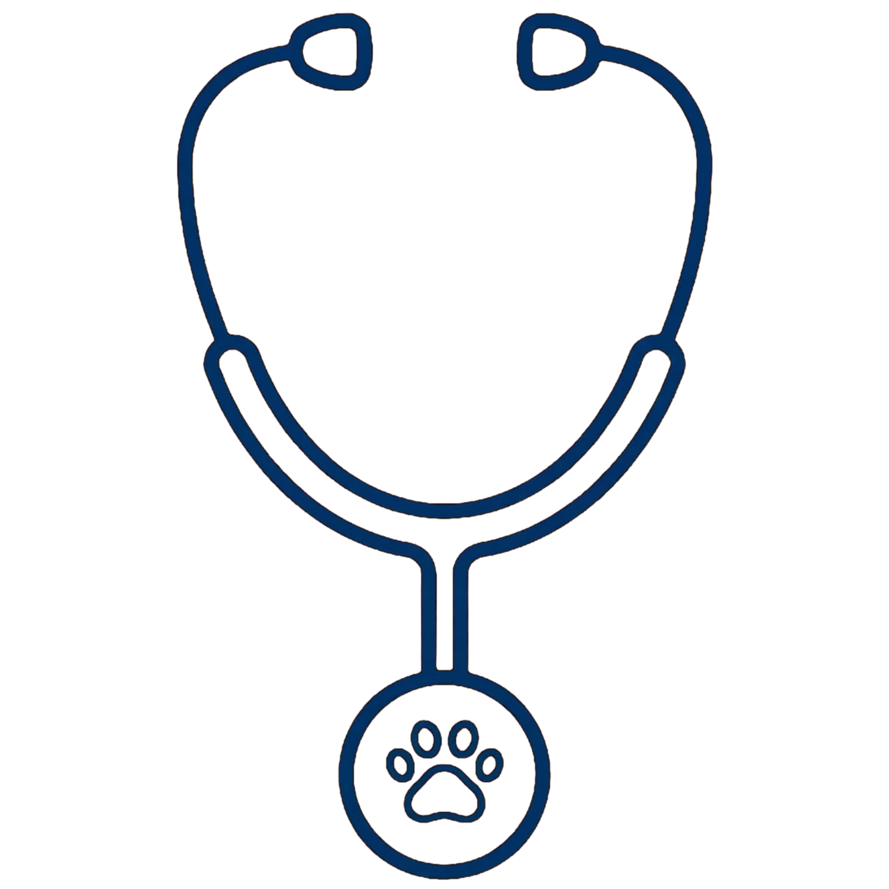
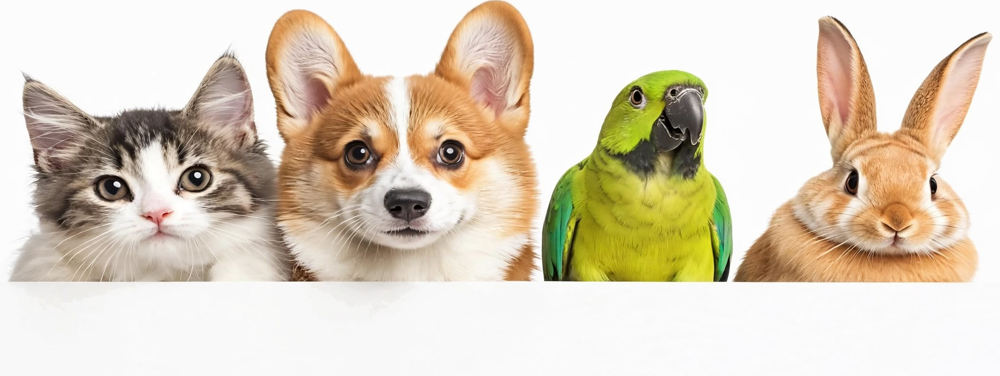
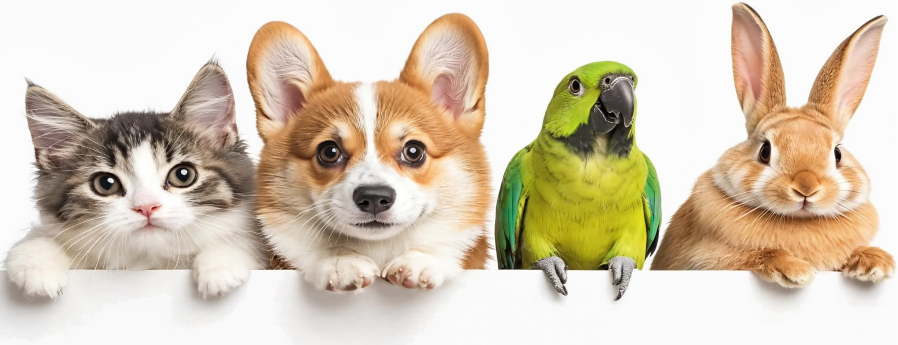
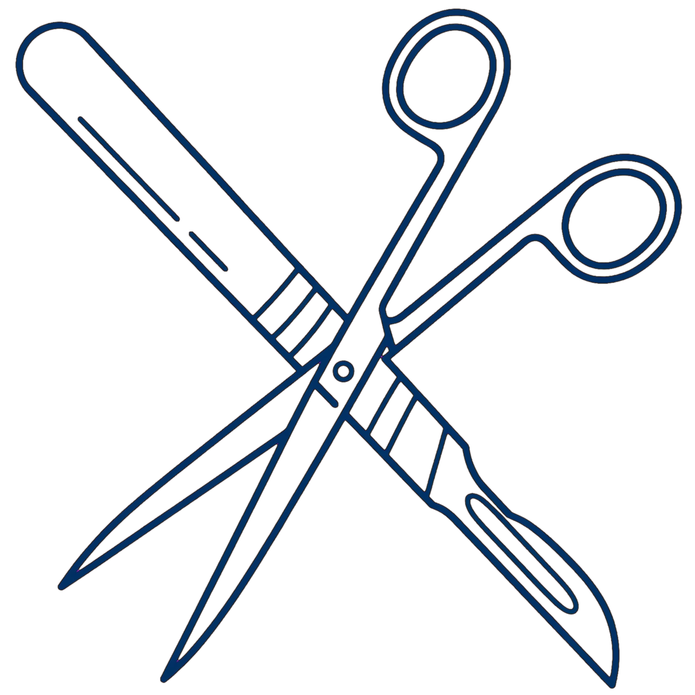
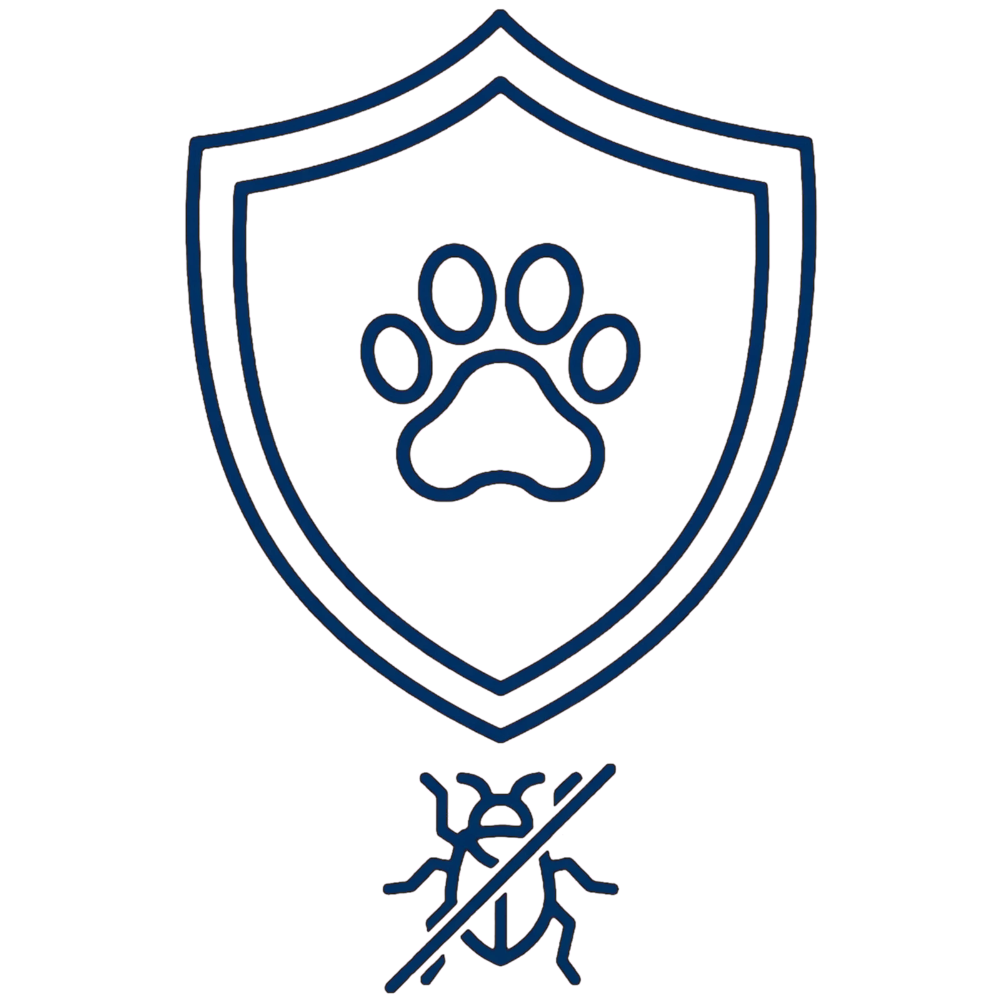
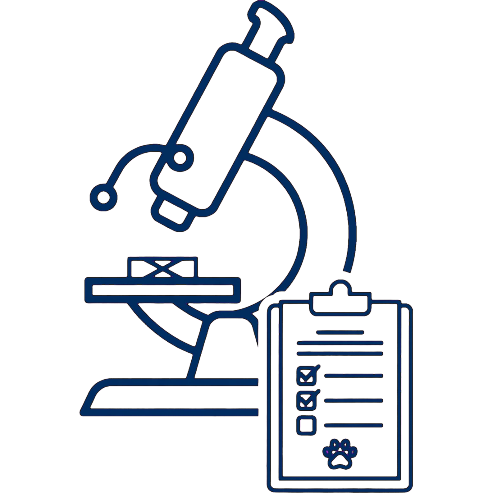
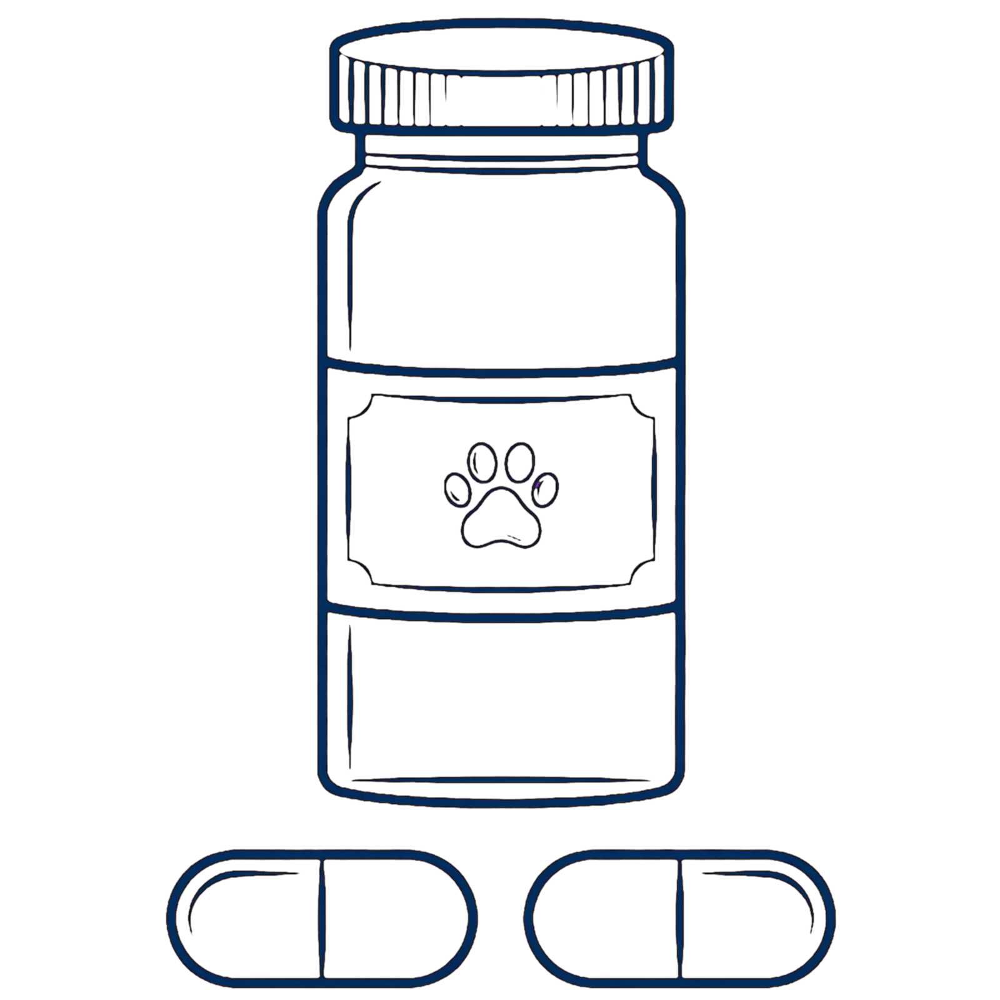
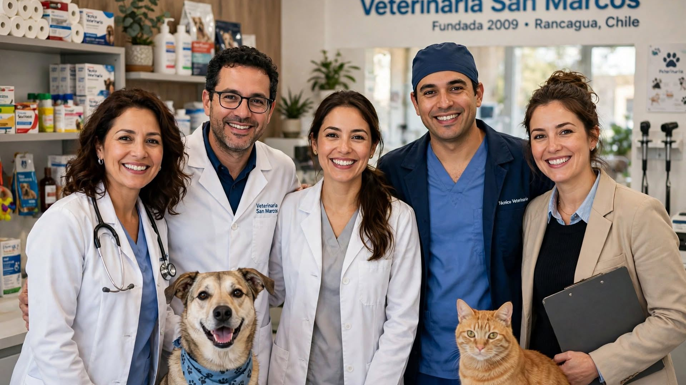
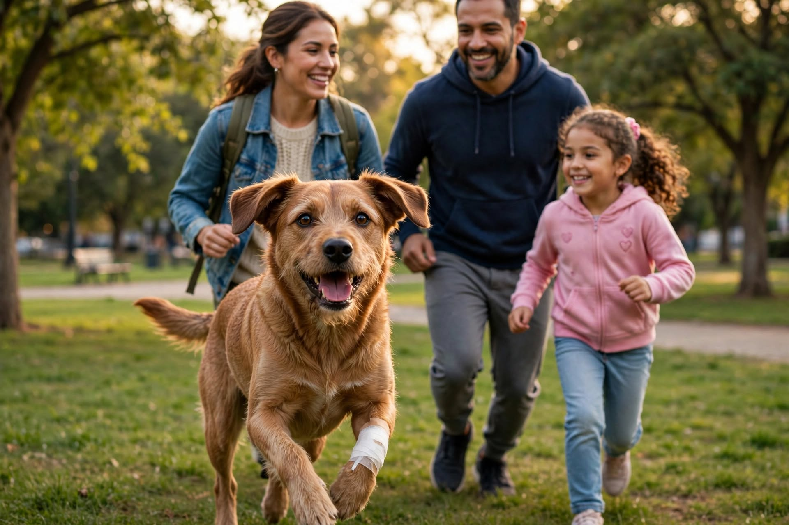
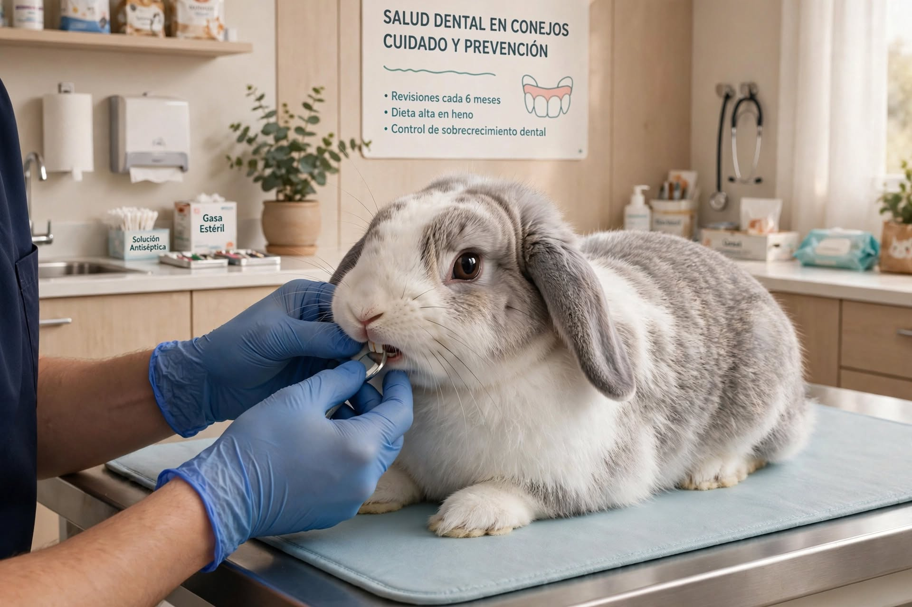

Consultas

Llevamos más de 15 años entregando atención cercana y de calidad a las mascotas. Contamos con médicos veterinarios, técnico veterinario y equipamiento especializado. Sabemos lo importante que es tu mascota para ti, por eso trabajamos con dedicación y cariño en cada visita.







Veterinaria San Marcos es una clínica veterinaria ubicada en Rancagua, Región del Libertador General Bernardo O'Higgins, fundada en 2009. Contamos con un equipo integral dedicado a brindar una atención cercana y profesional, para tus mascotas. A lo largo de estos años, hemos visto crecer la confianza de nuestros clientes, lo que nos motiva a seguir mejorando cada aspecto de nuestra atención, desde la comodidad de nuestras instalaciones hasta la calidez con la que recibimos a cada mascota y su familia.

Laura Claro Hernández: Médica Veterinaria, Universidad de Concepción. Diplomado en Cirugía de Pequeños Animales (Universidad de Chile). Directora clínica y fundadora de Veterinaria San Marcos, con más de 15 años de trayectoria en medicina y cirugía de perros y gatos.
Firulais llegó en estado crítico por un accidente, fue operado de urgencia y, tras semanas de cuidados y acompañamiento familiar, se recuperó por completo.
Expandir
Sus dientes crecen continuamente; desequilibrios en la dieta o alineación pueden causar problemas graves. Revisiones periódicas y dieta rica en fibra ayudan a prevenirlos.
Expandir